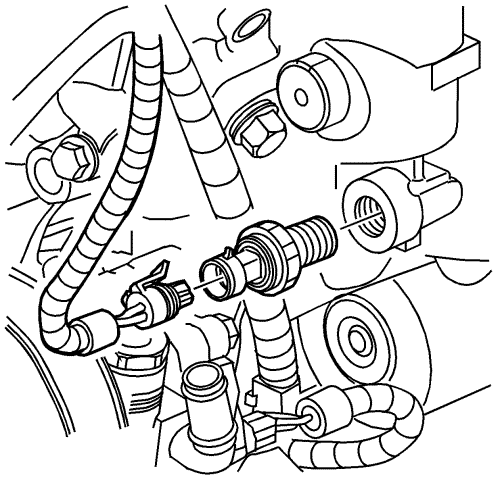

Prelubricación del motor
Herramientas especiales
| • | EN 21867-6 Accesorio adaptador de presión de aceite |
| • | EN 45299 Prelubricador de motor |
Si desea informarse sobre herramientas regionales equivalentes, consultar Herramientas especiales

Nota: Para lubricar el motor adecuadamente se requiere un flujo constante y continuo de aceite de motor limpio. Asegúrese de utilizar un aceite de motor aprobado, según se especifica en el manual del propietario.
- Desmonte el tapón del filtro de aceite .
- Monte el NUEVO cartucho del filtro de aceite.
- Lubrique las roscas de la caperuza del filtro de aceite con aceite de motor limpio.
Precaución: Consulte Precaución con las fijaciones en la sección Prólogo
- Monte la caperuza del filtro de aceite y apriétela a 25 N·m (18 lib. pie).
- Desmonte la unidad de envío de presión de aceite del adaptador del filtro de aceite.
- Monte el accesorio EN 21867-6.

- Monte el tubo flexible al adaptador y abra la válvula.
- Mueva de arriba abajo el manilla del prelubricador EN 45299 para hacer fluir un mínimo de 1-1,9 litros (1-2 cuartos) de aceite de motor. Observe que el flujo de aceite de motor pasa a través del tubo flexible hasta el interior de conjunto del motor.
- Cierre la válvula y desmonte el tubo flexible y el adaptador del motor.
- Monte la unidad de envío de presión de aceite y apriétela hasta 20 N·m (15 lib. pie).
- Llene con aceite de motor hasta alcanzar el nivel adecuado.
| © Copyright Chevrolet Europe. All rights reserved |